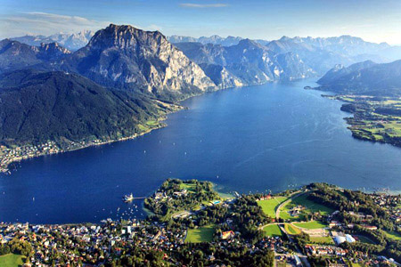

| tó neve | Attersee | Traunsee | Mondsee | Wolfgangsee | Hallstätter See | Velencei-tó |
| vízfelület | 45,9km2 | 24,5km2 | 14,2km2 | 12,8lm2 | 8,6km2 | 25,8km2 |
| tszfmagassága | 469m | 423m | 481 | 538m | 508m | 100m |
| legnagyobb mélysége | 171m | 191 | 68m | 114m | 125m | 2m |
| legnagyobb városa | Seewalchen | Gmunden | Mondsse | St.Gilgen | Hallstatt | |
| egyedisége | legnagyobb | legmélyebb | legmelegebb | legszebb | leghidegebb | legmagyarosab |
| foto | |
|
|
 | |
|